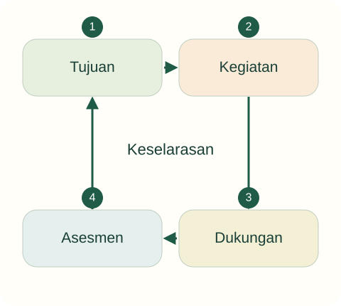

Tujuan pembelajaran
- Memetakan hubungan antarkomponen pendidikan.
- Menemukan ketidaksesuaian tujuan, kegiatan, dan penilaian.
- Merancang perbaikan sederhana beserta bukti yang relevan.
Mengapa kegiatan yang menarik belum tentu mendukung tujuan pembelajaran?
Guru ingin mengembangkan kerja sama. Ia memberi setiap anak lembar tugas yang sama, melarang berbicara, lalu menilai anak yang paling cepat selesai sebagai yang paling berhasil.
Temukan persoalan konseptual
Sebelum membaca penjelasan, pisahkan kejadian yang dinyatakan dalam kasus dari dugaan Anda. Gunakan pertanyaan berikut untuk menyiapkan analisis.
- Apa tujuan pendidikan yang sedang dipertaruhkan?
- Pengalaman apa yang dialami anak, dan informasi apa yang belum tersedia?
- Konsep atau jenis sumber apa yang diperlukan untuk menilai tindakan pendidik?

Pendidikan sebagai hubungan antarkomponen
Komponen pendidikan mencakup peserta didik, pendidik, tujuan, isi, metode, lingkungan, sarana, dan penilaian. Daftar ini berguna bila hubungan di antaranya dianalisis. Tujuan memandu pilihan pengalaman; pengalaman membuka tindakan anak; pengamatan memberi informasi untuk tindak lanjut. Kelengkapan alat belum menjamin hubungan tersebut berjalan baik.
Misalnya, balok yang mahal tidak otomatis mendukung kerja sama. Jika hanya seorang anak boleh menyentuhnya, kesempatan partisipasi tetap sempit. Sebaliknya, bahan sederhana dapat menjadi sumber pengalaman yang kaya ketika guru mengatur penggunaan dan percakapan secara tepat.
Tujuan, isi, dan metode
Isi adalah apa yang dipelajari, sedangkan metode berkaitan dengan cara mengorganisasi pengalaman. Tujuan berbagi peran membutuhkan kesempatan bernegosiasi dan bertindak bersama. Tugas individual dapat berguna untuk tujuan lain, tetapi tidak cukup menjadi bukti kerja sama. Perencanaan perlu menyatakan hubungan tersebut secara masuk akal, bukan sekadar mengisi kolom administrasi.
Usulan kegiatan: kelompok kecil membuat kebun mini dengan pembagian tugas yang fleksibel. Guru membantu anak membicarakan alat dan giliran. Jumlah anggota, waktu, serta bahan disesuaikan dengan kemampuan kelompok. Contoh ini perlu diuji dalam praktik; tidak ada satu komposisi kelompok yang selalu terbaik.
Pendidik dan lingkungan
Pendidik merancang kondisi, memberi teladan, mengamati, dan merespons. Lingkungan mencakup ruang fisik maupun suasana relasional. Rak yang dapat dijangkau memberi kemungkinan kemandirian; respons yang mengejek dapat meniadakan keberanian mencoba meskipun alat tersedia. Kondisi fisik dan interaksi perlu dinilai bersama.
Standar proses merupakan rujukan penyelenggaraan, tetapi materi kuliah ini tidak menyamakan kepatuhan dokumen dengan mutu pengalaman anak. Mahasiswa perlu melihat apakah kesempatan yang direncanakan benar-benar tersedia bagi semua anak (Permendikdasmen 1/2026).
Penilaian sebagai informasi
Penilaian dapat membantu pendidik menentukan dukungan berikutnya. Jika tujuannya bernegosiasi, data yang lebih relevan ialah percakapan, pembagian peran, dan cara menyelesaikan perbedaan. Produk yang rapi atau cepat selesai belum memadai. Pisahkan deskripsi peristiwa dari interpretasi: “A menawarkan sekop kepada B” lebih dapat diperiksa daripada “A anak baik”.
Permendikbudristek 21/2022 menjadi rujukan standar penilaian. Pada tingkat pengantar, mahasiswa berlatih menentukan bukti dan tindak lanjut, bukan menyusun diagnosis atau sistem tes yang rumit. Satu pengamatan sebaiknya tidak dipakai untuk menetapkan sifat tetap anak.
Kembali ke kasus
Tujuan kerja sama tidak selaras dengan larangan berinteraksi dan ukuran kecepatan individual. Perbaikan tidak sekadar mengganti lembar kerja dengan permainan; kegiatan perlu benar-benar menyediakan keputusan dan tindakan bersama.
Analisis ini merupakan contoh penalaran pedagogis. Pada situasi nyata, keputusan memerlukan informasi tentang anak dan konteks lembaga.
Latihan terbimbing
Isi empat kolom: tujuan, kesempatan anak, bukti, tindak lanjut. Contoh awal: tujuan bernegosiasi; kesempatan memilih alat bersama. Tentukan bukti percakapan dan dukungan saat satu anak selalu mendominasi.
Latihan mandiri
Rancang ulang kasus pembuka dalam 300 kata. Jelaskan perubahan kegiatan, peran pendidik, lingkungan, dan penilaian. Sebut satu risiko pelaksanaan serta cara mengamatinya.
- Konsep digunakan dengan tepat dan dijelaskan hubungannya dengan kasus.
- Fakta dipisahkan dari interpretasi; sumber mendukung jenis klaimnya.
- Tindakan konkret, menghargai anak, dan memiliki cara peninjauan.
Lihat pembahasan
Cara anak berbagi peran dan merespons usulan teman.
Bukti perlu dekat dengan konstruk yang dinilai. Kecepatan dan harga alat tidak langsung menunjukkan kualitas kerja sama.
Refleksi calon pendidik
Bagian mana dalam rancangan saya yang hanya terlihat menarik tetapi belum jelas hubungannya dengan tujuan?
Catatan hanya disimpan di peramban ini. Tidak dikirim kepada dosen.
Intisari dan tindak lanjut
- Tujuan, kesempatan belajar, lingkungan, dan penilaian perlu selaras.
- Ketersediaan alat tidak menjamin anak memperoleh kesempatan berpartisipasi.
- Bukti penilaian harus relevan dengan kemampuan yang ingin dipahami.
Uji kembali pemahaman di atas melalui latihan mandiri. Jika alasan Anda belum menghubungkan konsep dan tindakan, baca ulang submateri terkait sebelum menandai selesai.
Referensi dan bacaan pendamping
Sumber untuk klaim khusus disebut pada uraian. Buku pendamping tidak dikutip langsung. Jenis dan batas penggunaan setiap rujukan dijelaskan di bawah.
- Kementerian Pendidikan Dasar dan Menengah. (2026). Peraturan Menteri Pendidikan Dasar dan Menengah Nomor 1 Tahun 2026 tentang Standar Proses pada Pendidikan Anak Usia Dini, Jenjang Pendidikan Dasar, dan Jenjang Pendidikan Menengah.Menggantikan Permendikbudristek 16/2022. Periksa ruang lingkup dan batang tubuh untuk penerapan kelembagaan.
- Kementerian Pendidikan, Kebudayaan, Riset, dan Teknologi. (2022). Peraturan Menteri Pendidikan, Kebudayaan, Riset, dan Teknologi Nomor 21 Tahun 2022 tentang Standar Penilaian Pendidikan pada Pendidikan Anak Usia Dini, Jenjang Pendidikan Dasar, dan Jenjang Pendidikan Menengah.Rujukan penilaian yang ditemukan dalam penelusuran. Ketentuan penilaian dalam Permendikbud 137/2014 telah dicabut melalui peraturan ini.
- Republik Indonesia. (2021). Peraturan Pemerintah Nomor 57 Tahun 2021 tentang Standar Nasional Pendidikan, sebagaimana diubah dengan Peraturan Pemerintah Nomor 4 Tahun 2022.Baca PP dasar bersama perubahannya; tautan menuju daftar landasan hukum resmi.